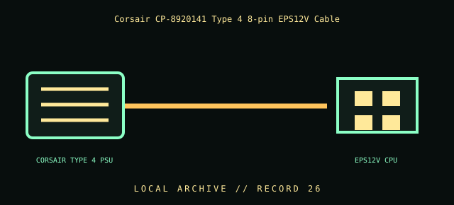

[ INDIVIDUAL COMPONENT // CABLES & ADAPTERS ]
Corsair CP-8920141 Type 4 8-pin EPS12V Cable
Corsair CP-8920141 Type 4 sleeved black 8-pin (4+4) ATX12V/EPS12V cable. This entry identifies the documented model and does not claim that visually similar products share its pinout, protocol, capability, or host compatibility.

COMPATIBILITY WARNING: Verify the exact product model, host/device role, signal protocol, electrical requirements, and manual before connection. Connector fit alone does not prove compatibility.
Specifications
| Catalog subcategory | Internal power cables |
|---|---|
| Catalog identity | Corsair CP-8920141 Type 4 sleeved black 8-pin (4+4) ATX12V/EPS12V cable |
| Verified protocol / model information | Corsair model CP-8920141; 8-pin (4+4) EPS/ATX12V CPU-power end and Corsair Type 4 modular PSU family. Corsair describes the product as compatible with Type 4 pin-out PSUs; no universal modular-PSU pinout is implied. |
| Connector ends | CORSAIR TYPE 4 PSU → EPS12V CPU; diagram is schematic, not a pinout map. |
Physical & electrical compatibility
Use only with PSU models Corsair explicitly lists as Type 4 compatible. Modular PSU-side connectors are not standardized across manufacturers or product families; a plug may fit while pins carry different voltages. Do not use with Corsair Type 5, other manufacturers, or an unverified Type 3/4 model by visual similarity. Corsair notes its Type 4 compatibility guide is the authority for exact PSU models.
Archival & handling notes
Preserve the complete CP-8920141 part number and package/label. Document the exact PSU model and revision paired with it. Inspect both ends and cable insulation; never repin or energize an unidentified modular lead. Store separately from look-alike cables and keep the manufacturer compatibility chart with the record.
Record provenance, condition, label photographs, exact full part number/revision, host system, and any test method/result. Preserve packaging and source documents with the cable when available.
Manufacturer & standards references
- Corsair — CP-8920141 Type 4 sleeved 8-pin (4+4) EPS12V cableManufacturer model, Type 4 designation, and stated compatible family.
- Corsair — PSU cable compatibility chartUse the exact PSU model list; do not infer modular cable interchangeability.
Manufacturer documentation applies to the cited model; standards references describe the protocol family. Where product revisions or device support vary, the exact manufacturer manual and host documentation take precedence.